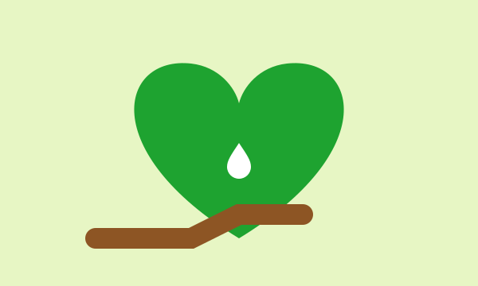

Doe materiais
- Sacos de lixo resistentes
- Luvas de proteção
- Areia para pratos de vaso
- Telas para ralos e caixas d’água
08 — Apoie
A EcoAedes vive de gente que doa tempo, materiais e divulgação. Escolha a forma que cabe na sua rotina.

Ajude em mutirões, palestras ou na produção de material acessível.
Compartilhe o site e a varredura da casa com a família, a escola e o condomínio.
EXEMPLO — chave fictícia. Este é um projeto acadêmico: não faça transferências.
Chave Pix (exemplo): exemplo-pix@ecoaedes.exemplo